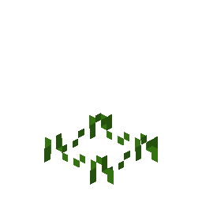
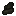
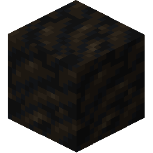
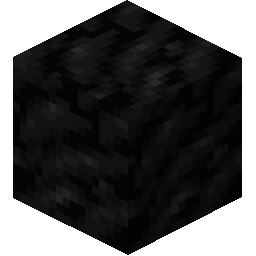

矿石和矿物
矿石和矿物
群峦传说中的矿物和矿石可称得上是稀有资源。与原版不同，矿石只会生成在庞大，但稀少的矿脉结构中。要想找到矿脉，就必须熟练掌握勘矿技巧。有些矿石只会出现在特定的岩石类型中或高度上。因此，勘矿的一大关键步骤便是找到正确的岩石类型和高度。
另外，某些矿石是分级的。矿石块可能是贫瘠、普通或富集的，不同的矿脉中各类矿石块的比例也不同。更富集的矿脉价值更高。
接下来的几页将展示不同类型的矿石、它们的模样以及在哪里可以找到它们。
原生铜
原生铜是铜的矿石。它可以在喷出岩中找到，海拔高于 y=40。
它也可以出现在河流的沉积物中，这些沉积物可以用淘金盘淘洗。

英安岩中的原生铜矿。
原生金
原生金是金的矿石。它可以在 y=70 以下的海拔找到，但更深的矿脉更大更富集。它可以在喷出岩和侵入岩中找到。
它也可以出现在河流的沉积物中，这些沉积物可以用淘金盘淘洗。

闪长岩中的原生金矿。
原生银
原生银是银的矿石。在隆升区域 y=90 以上的花岗岩或闪长岩中可以找到小型贫瘠矿脉。在 y=20 以下的深层地下，在花岗岩、闪长岩、片岩和片麻岩中可以找到更大更富集的矿脉。
它也可以出现在河流的沉积物中，这些沉积物可以用淘金盘淘洗。

花岗岩中的原生银矿。
黝铜矿
黝铜矿是铜矿石的一种。它可以生成在任何深度的变质岩中，但更深的矿脉通常更丰盛。

片岩中的黝铜矿。
孔雀石
孔雀石是铜的矿石。它主要出现在大理岩或石灰岩、白垩岩和白云岩中。它可以在大多数海拔找到，但更深的矿脉通常更大更富集。

大理岩中的孔雀石矿。
锡石
锡石是锡的矿石。它可以在高海拔的侵入岩中找到，在隆升区域或岩墙中 y=80 以上。
它也可以出现在河流的沉积物中，这些沉积物可以用淘金盘淘洗。

闪长岩中的锡石矿。
辉铋矿
辉铋矿是铋的矿石。它可以在近地表的沉积岩中找到，或者在深层地下的侵入岩中找到更大更富集的矿脉。
多方块结构
页岩中的辉铋矿。
绿镍矿
绿镍矿是镍的矿石。它可以在 y=0 以下的海拔找到。主要存在于深层地下的辉长岩中。在侵入岩中也可以找到较小、更稀少的矿脉。

辉长岩中的绿镍矿。
赤铁矿
赤铁矿是铁的矿石。它可以在近地表的任何喷出岩中以大型矿脉的形式找到。

安山岩中的赤铁矿。
磁铁矿
磁铁矿是铁的矿石。它可以在近地表的任何沉积岩中以大型矿脉的形式找到。

石灰岩中的磁铁矿。
褐铁矿
褐铁矿是铁的矿石。它可以在近地表的任何沉积岩中以大型矿脉的形式找到。

白垩岩中的褐铁矿。
闪锌矿
闪锌矿是锌的矿石。小型贫瘠矿脉可以在近地表的喷出岩中找到，而大型富集矿脉可以在深层地下的侵入岩中找到。

石英岩中的闪锌矿。

褐煤
褐煤是一种低品位的煤矿石。它可以在近地表的沉积岩中以非常巨大的扁平矿层形式找到。

褐煤。
烟煤
烟煤是一种中等品位的煤矿石。它可以在近地表的沉积岩中以非常巨大的扁平矿层形式找到。

烟煤

高岭石
高岭石是一种柔软的矿物，用于制作耐火黏土。它可以在高原、古老山脉、丘陵和高地的海拔较高处生成，需要温度至少 18°C，降雨量至少 300mm。火球花生长在高岭土上。
多方块结构
高岭土的变种。

石墨
石墨是一种矿物，用于制作耐火黏土。它可以在 y=60 以下的片麻岩、大理岩、石英岩和片岩中找到。

片麻岩中的石墨。

朱砂
Cinnabar is a Mineral which can be ground in the Quern to obtain Redstone Dust. It can be found in veins deep underground or high in mountains, in Quartzite, Granite, Phyllite, Schist, and Gneiss.

石英岩中的朱砂。

冰晶石
冰晶石是一种矿物，可以在手推磨中研磨得到红石粉。它可以在深层地下的矿脉中找到，存在于花岗岩和闪长岩中。

花岗岩中的冰晶石。

硝石
硝石是一种矿物，可以在手推磨中研磨，然后用于制作火药。它可以在近地表的沉积岩中以非常巨大的扁平矿层形式找到。
多方块结构
页岩中的硝石。

硫磺
硫磺是一种矿物，可以在手推磨中研磨，然后用于制作火药。它出现在深层地下靠近岩浆层的位置，以稀疏但大型且丰富的矿脉形式存在，可在任何变质岩或侵入岩中找到。

辉长岩中的硫磺。

钾石盐
钾石盐是一种矿物，可以在手推磨中研磨，然后用作肥料。它可以在近地表的页岩、黏土岩和燧石岩中以非常巨大的扁平矿层形式找到。

硅质岩中的钾盐

硼砂
硼砂是一种矿物，可以在手推磨中研磨制成助焊剂。它可以在近地表的黏土岩、石灰岩和页岩中以非常巨大的扁平矿层形式找到。
多方块结构
页岩中的硼砂。

石膏
石膏是一种装饰性矿物，可用于制作灰泥。它可以在近地表的沉积岩中以非常巨大的扁平矿层形式找到。

白垩岩中的石膏。

岩盐
岩盐是一种矿物，可以在手推磨中研磨制成盐，这是一种重要的防腐剂。它可以在近地表的沉积岩中以非常巨大的扁平矿层形式找到。

岩盐。

祖母绿
祖母绿是一种宝石。它看起来相当漂亮，也许在这个无比孤独的世界里，如果你能找到另一个人，还能用它和他们做交易……
它出现在薄而垂直的矿脉中，最高可达一百格。它可以在侵入岩中找到，或与温泉相伴而生。

闪长岩中的祖母绿。

金伯利岩
金伯利岩是一种装饰性且价值连城的宝石。它出现在被称为金伯利岩管的薄而垂直的矿脉中，最高可达一百格。它们只能在辉长岩中找到。金伯利岩也偶尔出现在火山裂缝中。

辉长岩中的金伯利岩。

青金石
青金石是一种装饰性宝石，可以用来制作蓝色染料。它可以在石灰岩和大理岩中以巨大但稀疏的矿脉形式找到，位于 y=-20 到 y=80 之间。

大理岩中的青金石。

紫水晶
紫水晶是一种装饰性宝石，可以用来制作玻璃。它可以在河流下方 y=40 以上的沉积岩和变质岩中找到，或在 y=30 以下的晶洞中找到。

大理岩中的紫水晶。

蛋白石
蛋白石是一种装饰性宝石。它可以在河流下方 y=40 以上的沉积岩和喷出岩中找到。

玄武岩中的蛋白石。

黄铁矿
黄铁矿，又名愚人金，是一种装饰性宝石。它可以在 y=70 以下的侵入岩和喷出岩中找到。

花岗岩中的黄铁矿。

红宝石
红宝石是一种装饰性宝石。它很少在 y=-10 以下的大理岩中找到，更常见于碰撞山脉的大理岩矿脉中。

大理岩中的红宝石。

蓝宝石
蓝宝石是一种装饰性宝石。它可以在温泉的裂缝中找到。

辉长岩中的蓝宝石。

黄玉
黄玉是一种装饰性宝石。它可以在火山的裂缝中找到。

片岩中的黄玉。